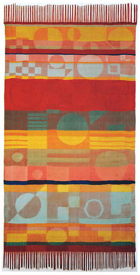

Gunta Stözel

Gunta Stözel, “Damast”, Jaquard wall hanging, 51” x 29” (1930)
For our first Case Study, we’ll look at the work of the Bauhaus design school and one of its notable textile artists, Gunta Stözel, whose work illustrates the fundamental concept of Balance.
🔗 View FigJam file to see the images and links from the video